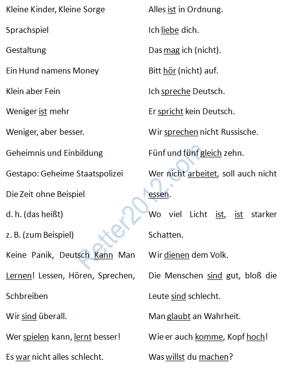

返回主页
名言佳句（短句）

学习指导（01）
学习指导（02）
学习指导（03）
学习指导（04）
学习指导（05）
学习指导（06）
学语言一定要地道，不要像日本人一样乱七八糟。日本漫画《少女与坦克》的标题Girls und Panzer中，Girls是英语音译，und Panzer是德语音译。日本游泳教学采用K-J分组，又用了Kind（幼儿）和Jung（少年）。在医学领域，日本更是全部采用德语作为工作语言。结果，日本人的外语比匈牙利人还差。
"We must aim to increase Japan's engagement in safeguarding the world's peace and stability in order to pursue an active pacifism based on international cooperation," Abe said.
以和平或民主的旗号打仗，好像 Propaganda im Dritten Reich: Kanonen statt Butter（要大炮，不要黄油！）
德语常用缩写
德语精确！德语号称是科学和哲学的语言。比如 Sprachspiel 一词，要翻译就比较困难。
名言佳句（亚里士多德）
参考：Logic For Dummies by Mark Zegarelli的德语版。出版社 Wiley-VCH Verlag GmbH （2008年2月15日）。
德语名言：政治经济（1）
德语名言：政治经济（2）
德语名言：激励奋斗（1）
德语名言：激励奋斗（2）
德语名言：Segel航海（1）
德语名言：Segel航海（2）
德语名言：哲学智慧（1）
德语名言：哲学智慧（2）
version:1.0; jobnet@188.com © retter2012.com